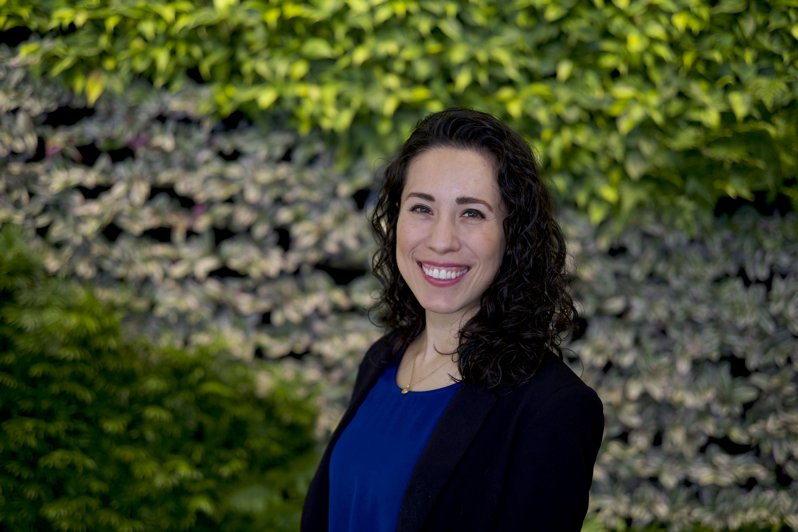

Laura Lara-Castor
PhD, Nutritional Epidemiology & Data Science
Postdoctoral Scholar
Institute for Health Metrics and Evaluation (IHME) | University of Washington
About Me
I am a nutritional epidemiologist dedicated to understanding global cardiometabolic disease and its underlying risk factors. My research leverages advanced quantitative methods to generate large-scale, policy-relevant evidence that aims to improve population health worldwide. Currently, as a postdoctoral scholar at the Institute for Health Metrics and Evaluation (IHME), I contribute to the Global Burden of Disease (GBD) study and lead meta-analytical research on the relationship between systolic blood pressure and heart failure.
My doctoral research quantifiying global consumption of sugar-sweetened beverages (SSBs), their attributable c ardiometabolic burden, and the cost-effectiveness of SSB taxation globally, was awarded a pre-doctoral fellowship from the American Heart Association and published in high-impact journals including Nature Medicine and BMJ. It was also featured in major media outlets such as the New York Times and National Public Radio and recognized by the American Society for Nutrition with the George Bray Obesity Research Student Award and Emerging Leaders Competition.
I previously served as a researcher at the National Institute of Public Health in Mexico, focusing on improving clinical detection and care of cardiometabolic diseases and their complications. As part of my academic background I hold a master’s in Nutrition and Metabolism from Boston University School of Medicine and a bachelor’s degree in Nutritional Sciences from Universidad de las Américas Puebla, Mexico.